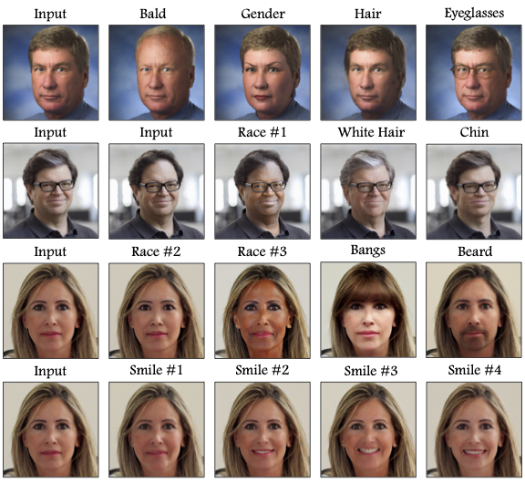

GANTASTIC successfully transfers editing directions that modify the overall look, including changes in race or aging, as well as more detailed edits that target specific facial attributes, such as eyeglasses or a beard. GANTASTIC can also distinguish among various edits for the same feature underlines the versatility of our approach, providing users with an extensive selection of editing options for individual characteristics, like multiple smile designs or styles of baldness.